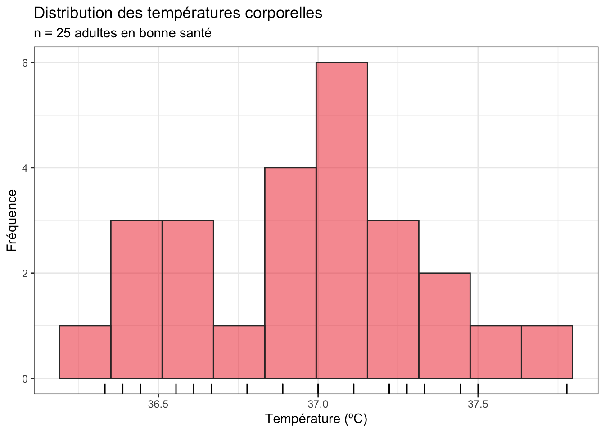
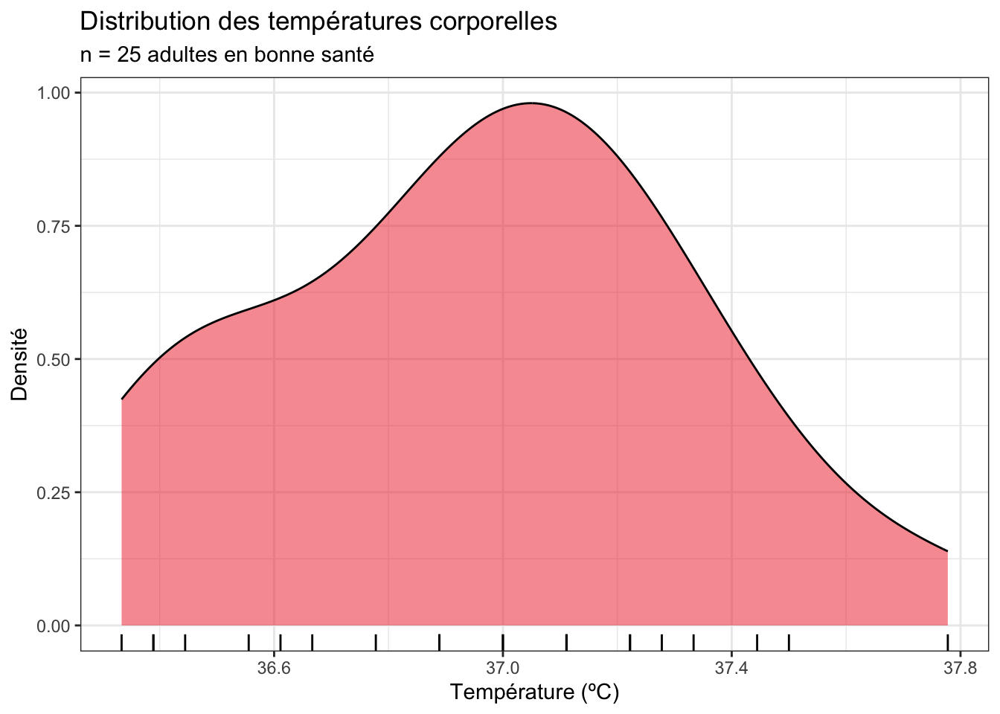
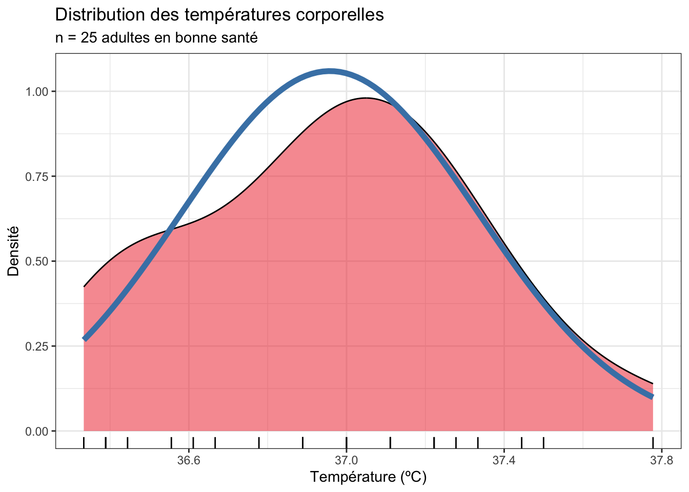
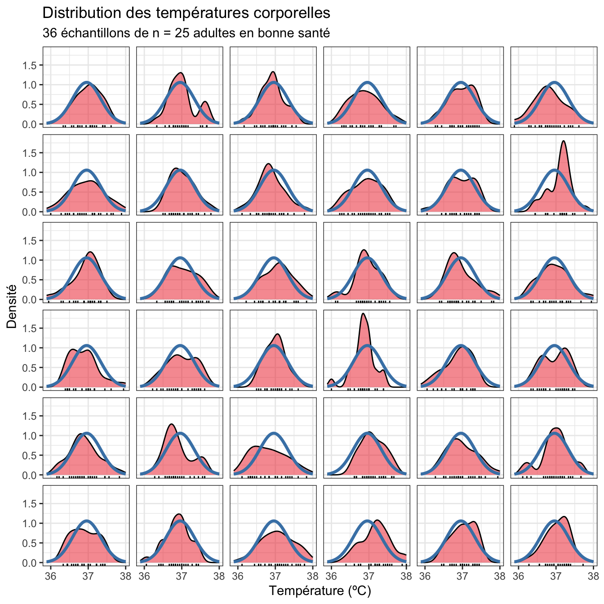
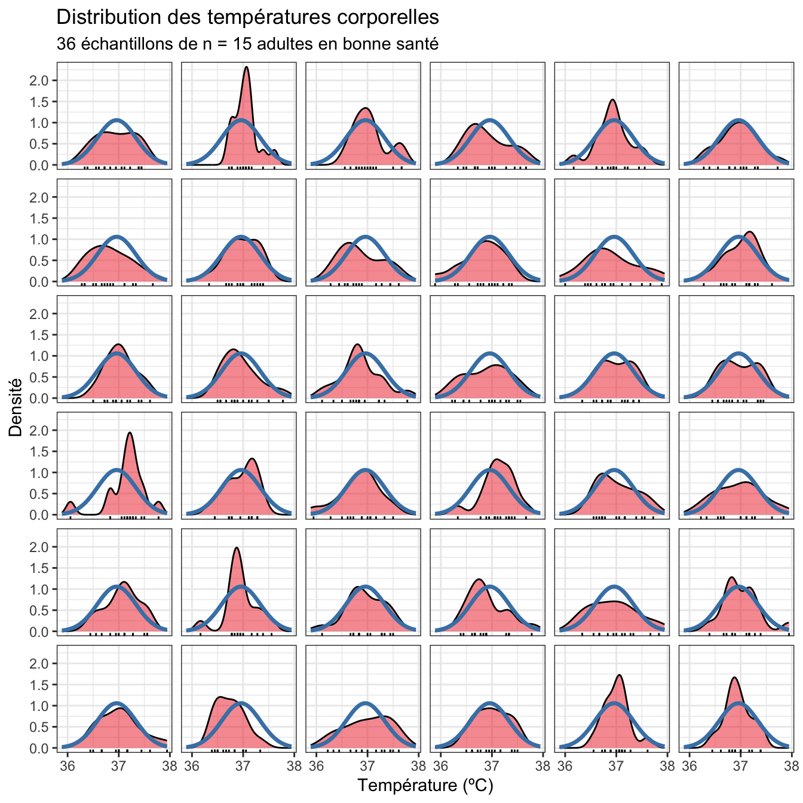

library(tidyverse)
library(skimr)9.1 Pré-requis
Dans ce chapitre, nous abordons pour la première fois les tests d’hypothèses. Je vous conseille donc de créer un nouveau script dans votre répertoire de travail (au même endroit que votre RProject) et de réinitialiser votre session de travail en relançant R (ctrl + shift + 0 sous Windows, ou command + shift + 0 sous MacOS) ou RStudio.
Dans ce chapitre, vous aurez besoin d’utiliser des packages spécifiques et d’importer des données depuis des fichiers externes téléchargeables directement depuis ce document. Les packages dont vous aurez besoin ici et que vous devez donc charger en mémoire, sont le tidyverse et skimr déjà décrits en détail dans les chapitres précédents :
Vous aurez également besoin des jeux de données suivants :
Enfin, je spécifie ici une fois pour toutes le thème que j’utiliserai pour tous les graphiques de ce chapitre. Libre à vous de choisir un thème différent ou de vous contenter du thème proposé par défaut :
theme_set(theme_bw())Cette commande permet d’éviter d’avoir à ajouter la couche theme_bw() à chaque graphique que je vais créer durant cette session de travail.
9.2 Contexte
On s’intéresse ici à la température corporelle des adultes en bonne santé. On souhaite examiner la croyance populaire qui veut que cette température vaut en moyenne 37ºC. Pour le vérifier, on dispose d’un échantillon de 25 adultes en bonne santé choisis au hasard parmi la population américaine et dont on a mesuré la température. Comme pour toute étude statistique, les étapes que nous allons devoir suivre sont les suivantes (dans l’ordre) :
- Importer les données dans
RStudio, les examiner et éventuellement les (re)mettre en forme si besoin. - Faire une première exploration des données, grâce au calcul d’indices de statistiques descriptives d’une part, et de représentations graphiques d’autre part.
- Réaliser un test d’hypothèses en respectant la procédure adéquate (en particulier, la vérification des conditions d’application).
C’est donc ce que nous allons faire dans les sections suivantes.
À retenir !
Avant de se lancer dans les tests d’hypothèses, il est toujours indispensable d’examiner les données dont on dispose à l’aide, d’une part de statistiques descriptives numériques, et d’autres part, de graphiques exploratoires.
Nous avons vu dans les chapitres 6 et 7 quels indices statistiques il peut être utile de calculer, et dans les chapitres 3 et 8 quelles représentations graphiques il peut être utile de réaliser, afin de pouvoir se lancer dans des tests d’hypothèses sans risquer de grossières erreurs. N’hésitez pas à cliquer sur ces liens pour vous rafraîchir la mémoire !
9.3 Importation et mise en forme des données
Nous allons travailler ici sur les données contenues dans le fichier Temperature.csv. Téléchargez ces données dans votre répertoire de travail (attention : ne les ouvrez pas avec Excel, les données pourraient s’en trouver modifiées !), puis importez les données dans RStudio grâce à l’assistant d’importation. Si vous ne savez plus comment faire, consultez la Section 4.4.3.
Vous stockerez les données dans un objet que vous nommerez Temperature. Après l’importation, tapez son nom dans la console de RStudio et vérifiez que vous obtenez bien exactement ce résultat :
Temperature# A tibble: 25 × 2
individual temperature
<dbl> <dbl>
1 1 98.4
2 2 98.6
3 3 97.8
4 4 98.8
5 5 97.9
6 6 99
7 7 98.2
8 8 98.8
9 9 98.8
10 10 99
# ℹ 15 more rowsLa première chose à faire quand on travaille avec des données inconnues, c’est d’examiner les données brutes. Ici, les données sont importées au format tibble, donc seules les premières lignes sont visibles. Pour visualiser l’ensemble du tableau, utilisez la fonction View() (avec un V majuscule) ou, si vous avez mis en mémoire le tidyverse, la fonction view() (sans majuscule) :
View(Temperature)Cette commande ouvre un nouvel onglet présentant les données dans un tableur simplifié, en lecture seule. On constate ici 2 choses que nous allons modifier :
- la première colonne, intitulée
individual, n’est pas véritablement une variable. Cette colonne ne contient qu’un identifiant sans intérêt pour notre étude et est en fait identique au numéro de ligne. Nous allons donc supprimer cette colonne. - les températures sont exprimées en degrés Fahrenheit, ce qui rend leur lecture difficile pour nous qui sommes habitués à utiliser le système métrique et les degrés Celsius. Grâce à la fonction
mutate()décrite à la Section 5.6, nous allons donc convertir les températures en degrés Celsius grâce à la formule que nous avons déjà vue dans les chapitres précédents :
\[ºC = \frac{ºF - 32}{1.8}\]
Temp_clean <- Temperature |>
select(-individual) |> # Suppression de la colonne `individual`
mutate( # Transformation des températures en ºCelsius
temperature = (temperature - 32) / 1.8
)
Temp_clean# A tibble: 25 × 1
temperature
<dbl>
1 36.9
2 37
3 36.6
4 37.1
5 36.6
6 37.2
7 36.8
8 37.1
9 37.1
10 37.2
# ℹ 15 more rowsIl nous est maintenant possible d’examiner à nouveau les données avec la fonction View(). Avec des valeurs de températures comprises entre 36.3ºC et 37.8ºC, il n’y a visiblement pas de données aberrantes.
Examiner les données brutes est donc la première chose que vous devriez prendre l’habitude de faire, et ce de façon systématique, car cela permet de repérer :
- La nature des variables présentes .
- Les variables inutiles qui pourront être supprimées ou négligées.
- Les unités des variables utiles, afin de pouvoir les convertir si nécessaire.
- Les valeurs manquantes, atypiques ou aberrantes qui demanderont toujours une attention particulière.
Maintenant que l’examen préliminaire des données est réalisé, on peut passer au calcul des statistiques descriptives.
9.4 Exploration statistique des données
9.4.1 Position et dispersion
On s’intéresse ici au calcul de grandeurs statistiques nous apportant des renseignements sur les paramètres de position et de dispersion de la population. On calcule donc pour cela des estimateurs de ces paramètres grâce à notre échantillon. Les questions auxquelles on tente de répondre à ce stade sont les suivantes :
- Quelle est la tendance centrale (moyenne ou médiane) ?
- Quelle est la dispersion des valeurs autour de la tendance centrale (écart-type, variance, intervalle interquartile…) ?
Pour répondre à ces questions, on peut faire appel à de multiples fonctions déjà présentées dans le Chapitre 6. Par exemple les fonctions summarise() et reframe(), en conjonction avec les fonctions mean(), median(), sd(), var(), min(), max() ou quantile(), ou les fonctions summary() ou skim() (du package skimr).
Je prends ici un exemple simple, mais n’hésitez pas à expérimenter avec les méthodes décrites dans le Chapitre 6.
summary(Temp_clean) temperature
Min. :36.33
1st Qu.:36.67
Median :37.00
Mean :36.96
3rd Qu.:37.22
Max. :37.78 On constate ici que la moyenne et la médiane sont très proches. La distribution des températures doit donc être à peut près symétrique, avec à peu près autant de valeurs au-dessus que de valeurs en dessous de la moyenne. Les premier et troisième quartiles sont à peu près aussi éloignés de la médiane l’un que l’autre, ce qui confirme l’apparente symétrie du jeu de données de part et d’autre de la tendance centrale.
La moyenne observée dans l’échantillon vaut 36.96ºC, ce qui est très proche de la moyenne théorique de 37ºC.
Une autre fonction utile est la fonction IQR(), qui renvoie l’étendue de l’intervalle interquartile (c’est-à-dire la valeur du troisième quartile moins la valeur de premier quartile) :
Temp_clean |>
summarise(IQ_range = IQR(temperature))# A tibble: 1 × 1
IQ_range
<dbl>
1 0.556On constate ici que l’intervalle interquartile a une largeur de 0.56ºC. Cela signifie que les 50% des températures les plus centrales de l’échantillon sont situées dans un intervalle d’environ un demi-degré Celsius autour de la médiane.
Enfin, pour obtenir des informations complémentaires, on peut utiliser la fonction skim() du package skimr :
skim(Temp_clean)── Data Summary ────────────────────────
Values
Name Temp_clean
Number of rows 25
Number of columns 1
_______________________
Column type frequency:
numeric 1
________________________
Group variables None
── Variable type: numeric ──────────────────────────────────────────────────────
skim_variable n_missing complete_rate mean sd p0 p25 p50 p75 p100 hist
1 temperature 0 1 37.0 0.377 36.3 36.7 37 37.2 37.8 ▇▇▇▇▂Tout comme summary(), la fonction skim() renvoie les valeurs minimales et maximales, les premiers et troisièmes quartiles ainsi que la moyenne et la médiane. Elle nous indique en outre la valeur de l’écart-type de l’échantillon, ainsi que le nombre d’observations et le nombre de données manquantes. Enfin, elle fournit un histogramme très simplifié et sans échelle. Cet histogramme nous permet de nous faire une première idée de la distribution des données et est particulièrement utile pour comparer rapidement un grand nombre de distributions quand il y a plusieurs catégories dans les données (ce qui n’est pas le cas ici).
Outre ces 3 fonctions (summary(), IQR(), et skim()), il est bien sûr possible de calculer toutes ces valeurs manuellement si besoin :
mean()permet de calculer la moyenne.median()permet de calculer la médiane.min()etmax()permettent de calculer les valeurs minimales et maximales respectivement.quantile()permet de calculer les quartiles.sd()permet de calculer l’écart-type.var()permet de calculer la variance.n()permet de compter le nombre d’observations.
Toutes ces fonctions prennent seulement un vecteur en guise d’argument. Il faut donc procéder comme avec IQR() pour les utiliser, en les intégrant à l’intérieur de la fonction summarise(). Par exemple, pour calculer la variance, on peut taper :
Temp_clean |>
summarise(variance = var(temperature))# A tibble: 1 × 1
variance
<dbl>
1 0.142ou :
Temp_clean |>
pull(temperature) |>
var()[1] 0.1417901ou encore :
var(Temp_clean$temperature)[1] 0.1417901À vous d’utiliser la syntaxe qui vous semble la plus simple.
9.4.2 Incertitude
Outre les informations de position et de dispersion, nous avons vu dans la Section 7.3 qu’il était également important d’avoir une idée de l’incertitude associée aux estimations de tendance centrale (erreur standard ou intervalle de confiance de la moyenne ou médiane). Ici, nous allons donc calculer l’intervalle de confiance à 95% de la moyenne. Si vous ne savez plus comment faire, ou que vous ne comprenez pas le code ci-dessous, consultez la Section 7.5 :
Temp_clean |>
reframe(mean_cl_normal(temperature))# A tibble: 1 × 3
y ymin ymax
<dbl> <dbl> <dbl>
1 37.0 36.8 37.1On constate ici que les bornes inférieure (36.8ºC) et supérieure (37.1ºC) de l’intervalle de confiance à 95% de la moyenne sont proches de la valeur de moyenne de l’échantillon. Dans la population générale, la moyenne de la température corporelle chez les adultes en bonne santé a de bonnes chances de se trouver quelque part entre 36.8ºC et 37.1ºC. Autrement dit, si la température corporelle des adultes en bonne santé n’est pas exactement de 37ºC, l’écart à cette valeur théorique ne doit pas être très important.
9.5 Exploration graphique des données
Ici, puisque nous ne disposons que d’une unique variable numérique et que nous n’avons donc qu’un unique groupe, les représentations graphiques que nous allons réaliser doivent nous permettre d’examiner la distribution des données. Pour cela, nous pouvons réaliser soit un histogramme, soit un diagramme de densité.
9.5.1 Histogramme
Voilà comment produire un histogramme de qualité pour les données de températures :
Temp_clean |>
ggplot(aes(x = temperature)) +
geom_histogram(bins = 10, fill = "firebrick2", color = "grey20",
alpha = 0.5) +
geom_rug() +
labs(x = "Température (ºC)",
y = "Fréquence",
title = "Distribution des températures corporelles",
subtitle = "n = 25 adultes en bonne santé")
Si vous ne vous rappelez-plus ce qu’est un histogramme ou comment le faire, ou la signification de l’argument bins, relisez la Section 3.5.1 consacrée aux histogrammes. Notez que j’ai ajouté une couleur de remplissage et de la transparence pour rendre le graphique plus facile à lire. J’ai également spécifié des titres pour les axes (en précisant l’unité de la variable numérique dont on représente la distribution) ainsi que le titre (et sous-titre) du graphique, qui précise ce qu’on a sous les yeux et la taille de l’échantillon. Il n’est pas toujours nécessaire de spécifier le titre (et le sous-titre) de cette façon : lorsque vous intégrez des graphiques dans un compte-rendu ou un rapport, le titre est en général précisé sous la figure, au début d’une légende qui la décrit. Enfin, j’ai ajouté geom_rug() pour faire apparaître sous le graphique, le long de l’axe des x, la position des données observées. Cela permet de visualiser les données brutes, et peut donc permettre de mieux comprendre pourquoi un histogramme présente telle ou telle forme.
Ici, la forme de ce l’histogramme est assez proche de celle présentée plus tôt par l’histogramme très simplifié produit par la fonction skim(). Cet histogramme nous apprend qu’en dehors d’un “trou” autour de la température 36.75ºC, la distribution des données est proche d’une courbe en cloche. Il y a fort à parier qu’un test de normalité conclurait à la normalité des données de cet échantillon. C’est ce que nous verrons dans la Section 9.6.1.
9.5.2 Diagramme de densité
Une autre façon de visualiser la distribution d’une variable numérique est de produire un graphique de densité. Il a l’avantage d’éviter à l’utilisateur d’avoir à choisir une valeur pour l’argument bin de la fonction geom_histogram(), mais il a l’inconvénient de présenter une échelle plus difficile à comprendre pour l’axe des ordonnées :
Temp_clean |>
ggplot(aes(x = temperature)) +
geom_density(fill = "firebrick2", alpha = 0.5) +
geom_rug() +
labs(x = "Température (ºC)",
y = "Densité",
title = "Distribution des températures corporelles",
subtitle = "n = 25 adultes en bonne santé")
Les informations apportées par ce graphique sont cohérentes avec celle de l’histogramme :
- les températures les plus fréquemment observées dans notre échantillon de 25 adultes en bonne santé se situent légèrement au dessus de 37ºC. Il s’agit d’une information concernant la position des données (c’est-à-dire où se trouve le pic de la distribution sur l’axe des
x) - les températures observées ont une distribution qui ressemble à peu près à une courbe en cloche, avec des valeurs comprises entre 36.4ºC et 37.8ºC environ. La symétrie de part et d’autre du pic n’est pas parfaite, mais elle reste bonne. Il s’agit d’informations concernant la forme de la distribution et la dispersion des données.
Bilan des analyses préliminaires
Suite à l’exploration statistique et graphique des données de températures, voilà ce qu’on retient :
- Il n’y a visiblement pas de données aberrantes.
- La distribution des données semble suivre à peu près la loi Normale.
- La médiane et la moyenne sont très proches de 37ºC. Un test devrait donc arriver à la conclusion que la température corporelle des adultes n’est pas significativement différente de 37ºC.
- La largeur de l’intervalle de confiance à 95% semble faible, ce qui indique une incertitude relativement faible. Si la température réelle des adultes en bonne santé n’est pas exactement de 37ºC, elle ne devrait pas en être très éloignée (quelques dixièmes de degrés Celsuis au plus).
9.6 Le test paramétrique
Le test permettant de comparer la moyenne \(\mu\) d’une population à une valeur théorique, fixée par l’utilisateur, est le test de Student à un échantillon. Il permet de répondre à la question suivante :
Les données observés dans l’échantillon dont je dispose sont-elles compatibles avec l’hypothèse que la moyenne \(\mu\) de la population dont est issu mon échantillon vaut
XXX?
avec XXX, une valeur d’intérêt spécifiée par l’utilisateur. Il s’agit d’un test paramétrique très puissant. Comme tous les tests paramétriques, certaines conditions d’application doivent être vérifiées avant de pouvoir l’appliquer.
Important
Comme pour tous les tests statistiques que nous allons réaliser lors de ces séances de TP et TEA, nous devrons commencer par spécifier les hypothèses nulles et alternatives de chaque test, ainsi que la valeur du seuil \(\alpha\) que nous allons utiliser. À moins d’avoir une bonne raison de faire autrement, on utilise presque toujours le seuil \(\alpha = 0.05\) dans le domaine des sciences du vivant. C’est donc ce seuil que nous utiliserons dans ce livre en ligne.
9.6.1 Conditions d’application
Les conditions d’application du test de Student à un échantillon sont les suivantes :
- Les données de l’échantillon sont issues d’un échantillonnage aléatoire au sein de la population générale. Cette condition est partagée par toutes les méthodes que nous verrons dans ces TP. En l’absence d’informations sur la façon dont l’échantillonnage a été réalisé, on considère que cette condition est remplie. Il n’y a pas de moyen statistique de le vérifier, cela fait uniquement référence à la stratégie d’échantillonnage déployée et à la rigueur de la procédure mise en œuvre lors de l’acquisition des données.
- La variable étudiée doit suivre une distribution Normale dans la population générale. Nous allons vérifier cette condition d’application avec un test de normalité de Shapiro-Wilk.
Pour un test de normalité, les hypothèses seront toujours les suivantes :
- H\(_0\) : la variable étudiée suit une distribution Normale dans la population générale.
- H\(_1\) : la variable étudiée ne suit pas une distribution Normale dans la population générale.
Le test de Shapiro-Wilk se réalise de la façon suivante :
shapiro.test(Temp_clean$temperature)ou
Temp_clean |>
pull(temperature) |>
shapiro.test()
Shapiro-Wilk normality test
data: pull(Temp_clean, temperature)
W = 0.97216, p-value = 0.7001la fonction pull() permet d’extraire une colonne (ici temperature) d’un tibble (ici Temp_clean) et de la transformer en vecteur.
W est la statistique du test. Elle permet à RStudio de calculer la p-value. Ici, \(p > \alpha\). On ne peut donc pas rejeter l’hypothèse nulle de normalité : on ne peut pas exclure que dans la population générale, la température suive bel et bien une distribution Normale. Les conditions d’application du test de Student sont bien vérifiées.
Tests et décision : rappel de cours
À l’issue d’un tests statistique, la décision finale est toujours prise par rapport à l’hypothèse nulle (\(H_0\)) :
- Si la \(p-\)value du test est supérieure ou égale à \(\alpha\), on dit qu’on ne peut pas rejeter l’hypothèse nulle \(H_0\). Attention, on ne dit jamais que “\(H_0\) est vraie”, car il est impossible de le vérifier avec une certitude absolue. Toutefois, les données observées (celles de notre échantillon), sont compatibles avec l’hypothèse nulle que nous avons formulée, jusqu’à preuve du contraire.
- Si la \(p-\)value du test est inférieure à \(\alpha\), on dit qu’on rejette l’hypothèse nulle au seuil \(\alpha\). Autrement dit, les données observées ne sont pas compatibles avec l’hypothèse nulle. On accepte alors l’hypothèse alternative (\(H_A\)).
L’hypothèse nulle est toujours l’hypothèse la moins “intéressante”, celle pour laquelle “il ne se passe rien de notable” (par exemple : “les données suivent la distribution Normale”, ou “les moyennes sont égales”).
9.6.2 Signification de la \(p-\)value
La \(p-\)value est une grandeur centrale en statistiques et elle est souvent mal comprise et donc mal interprétée. Je prends donc le temps ici d’expliquer ce qu’est la \(p-\)value et comment il faut la comprendre.
Définition : la \(p-\)value
La \(p-\)value d’un test statistique, c’est la probabilité, si \(H_0\) est vraie, d’obtenir un effet au moins aussi extrême que celui qu’on a observé dans l’échantillon, sous le seul effet du hasard.
Ici, la \(p-\)value de notre test de Normalité de Shapiro-Wilk vaut 0.7101. Cela signifie que si les données suivent réellement la loi Normale dans la population générale (donc si \(H_0\) est vraie), l’écart à la Normalité que nous avons observé (ou un écart encore plus important), peut être observé dans 70.1% des cas. Autrement dit, si on prélève un grand nombre d’échantillons de 25 adultes dans la population générale et qu’on regarde à quoi ressemble la distribution des températures dans chacun de ces échantillons, pour 70.1% d’entre eux, la distribution obtenue sera au moins aussi éloignée de la distribution Normale que celle que nous avons observée ici.
Dans notre cas, l’écart entre la loi Normale et les données de notre échantillon peut être visualisé de la façon suivante :

La courbe de densité des données observées est en rouge, et la distribution Normale théorique correspond à la courbe en bleu. Il y a donc un écart entre la courbe en cloche parfaite de la loi Normale et les données observées. La \(p-\)value du test de Shapiro-Wilk nous dit que si la température des adultes en bonne santé suit réellement la loi Normale dans la population générale, alors, l’écart que nous avons observé, ou un écart encore plus important, peut être observé simplement par hasard dans 70.1% des cas. Autrement dit, c’est très probable, et on peut donc considérer que l’écart à la loi Normale que nous avons observé est le fruit du hasard et que notre variable suit donc bien la Loi Normale.
Pour bien comprendre cette notion importante, je simule ci-dessous 36 échantillons de 25 adultes dont les températures suivent parfaitement la loi Normale dans la population générale. Je me place donc dans la situation ou je sais que \(H_0\) est vraie, pour illustrer la notion de fluctuation d’échantillonnage. En raison du seul hasard de l’échantillonnage, et alors même que les échantillons que je génère sont issus d’une population qui suit parfaitement la Normale, la distribution dans chaque échantillon s’écarte parfois fortement de la courbe en cloche théorique :

On voit bien ici que certains échantillons s’écartent fortement de la distribution théorique alors même que tous les échantillons sont issus d’une population Normale. Et plus l’échantillon sera de taille réduite, plus les écarts à la courbe en cloche parfaite seront grands. La preuve ci-dessous avec des échantillons de n = 15 adultes au lieu de 25 :

Au final, la \(p-\)value de 0.701 de notre test de Shapiro-Wilk nous indique que l’hypothèse de la Normalité n’est pas incompatible avec les données que nous avons observées.
Imaginons qu’à l’inverse, nous ayons obtenu une \(p-\)value très faible, égale à 0.01 par exemple (donc inférieure à notre seuil \(\alpha\) de 0.05). Nous aurions alors rejeté l’hypothèse nulle. En effet, obtenir une \(p-\)value de 0.01, signifie que si \(H_0\) est vraie, obtenir un écart à la courbe en cloche théorique aussi important que celui que nous observons est très peu probable (une chance sur 100). Puisqu’il est très improbable d’observer un tel écart si \(H_0\) est vraie, on en conclu que \(H_0\) n’est pas vraie : les données sont incompatibles avec l’hypothèse nulle et on la rejette donc logiquement.
Cette logique sera valable pour tous les autres tests statistiques que nous aborderons dans cet ouvrage. Pour un test de Normalité, on regarde l’écart entre la distribution Normale et les données observées. Pour un test de comparaison de moyennes, on regarde l’écart entre la moyenne théorique et la moyenne observée, ou entre les 2 moyennes qu’on essaie de comparer. Mais la philosophie reste la même.
9.6.3 Réalisation du test de Student et interprétation
Puisque les conditions d’application du test de Student à un échantillon sont vérifiées, nous avons le droit de faire ce test, et nous devons donc maintenant spécifier les hypothèses nulles et alternatives que nous allons utiliser pour le réaliser :
- H\(_0\) : dans la population générale, la température corporelle moyenne des adultes en bonne santé vaut 37ºC (\(\mu = 37\)).
- H\(_1\) : dans la population générale, la température corporelle moyenne des adultes en bonne santé est différente de 37ºC (\(\mu \neq 37\)).
Hypothèses et paramètres
Notez que les hypothèses des tests statistiques concernent toujours la valeur d’un paramètre de la population générale, et non la valeur des estimateurs calculés dans un échantillon.
On réalise ensuite le test de la façon suivante :
t.test(Temp_clean$temperature, mu = 37)ou
t.test(temperature ~ 1, mu = 37, data = Temp_clean)ou encore,
Temp_clean |>
pull(temperature) |>
t.test(mu = 37)
One Sample t-test
data: pull(Temp_clean, temperature)
t = -0.56065, df = 24, p-value = 0.5802
alternative hypothesis: true mean is not equal to 37
95 percent confidence interval:
36.80235 37.11321
sample estimates:
mean of x
36.95778 Les résultats fournis ont une forme particulière qui est utilisée par de nombreuses fonctions de tests statistiques dans R. Ils méritent donc qu’on s’y attarde un peu.
Sur la première ligne, R nous confirme que nous avons bien réalisé un test de Student à un échantillon. La première ligne de résultats fournit la valeur du \(t\) calculé (ici, -0.56), le nombre de degrés de libertés (ici, df = 24), et la \(p-\)value (ici, 0.58, soit une valeur supérieure à \(\alpha\)). Cette première ligne contient donc tous les résultats du test qu’il conviendrait de rappeler dans un rapport. On devrait ainsi dire :
Au seuil \(\alpha\) de 5%, le test de Student ne permet pas rejeter l’hypothèse nulle \(\mu = 37\) (\(t = -0.56\), ddl = 24, \(p = 0.58\)). Les données observées sont donc compatibles avec l’hypothèse selon laquelle la température corporelle moyenne des adultes en bonne santé vaut 37ºC.
C’est de cette manière que vous devriez rapporter les résultats de ce test dans un compte-rendu ou un rapport à partir de maintenant.
Dans les résultats du test, la ligne suivante (alternative hypothesis: ...) ne donne pas la conclusion du test. Il s’agit simplement d’un rappel concernant l’hypothèse alternative qui a été utilisée pour réaliser le test. Ici, l’hypothèse alternative utilisée est une hypothèse bilatérale (\(\mu \neq 37\)). Nous verrons plus tard comment spécifier des hypothèses alternatives uni-latérales, même si la plupart du temps, mieux vaut s’abstenir de réaliser de tels tests (à moins bien sûr d’avoir une bonne raison de le faire).
Les résultats fournis ensuite concernent, non plus le test statistique à proprement parler, mais l’estimation. Ici, la moyenne de l’échantillon est fournie. Il s’agit de la meilleure estimation possible de la moyenne de la population : \(\bar{x} = \hat{\mu} = 36.96\). Comme pour toutes les estimations, cette valeur est entachée d’incertitude liée à la fluctuation d’échantillonnage. L’intervalle de confiance à 95% de cette estimation de moyenne est donc également fourni : \([36.80 ; 37.11]\). Vous notez qu’il s’agit des mêmes valeurs que celles que nous avions calculées dans la Section 9.4.2. Autrement dit, cet intervalle contient les valeurs les plus vraisemblables pour la véritable valeur de moyenne dans la population générale. Cela confirme bien que nous n’avons pas prouvé au sens strict que la moyenne de la population vaut 37ºC. Nous avons en réalité montré que nous ne pouvions pas exclure que la moyenne de la population générale soit de 37ºC. Puisque cette valeur est comprise dans l’intervalle de confiance, on ne peut donc pas l’exclure : nos données sont compatibles avec cette hypothèse. Mais beaucoup d’autres valeurs figurent aussi dans cet intervalle. Il est donc tout à fait possible que la moyenne soit en réalité différente de 37ºC (par exemple, 36.9ºC). Pour en être sûr, il faudrait probablement un échantillon de plus grande taille afin de limiter l’incertitude, d’augmenter la puissance statistique de notre test, et ainsi d’être en mesure de détecter des différences subtiles.
9.7 L’alternative non paramétrique
Si jamais les conditions d’application du test de Student à un échantillon n’étaient pas remplies, il faudrait alors réaliser son équivalent non paramétrique : le test de Wilcoxon des rangs signés. Ce test est moins puissant que son homologue paramétrique. On ne l’effectue donc que lorsque l’on n’a pas le choix :
wilcox.test(Temp_clean$temperature, mu = 37, conf.int = TRUE)ou
wilcox.test(temperature ~ 1, mu = 37, conf.int = TRUE, data = Temp_clean)ou encore
Temp_clean |>
pull(temperature) |>
wilcox.test(mu = 37, conf.int = TRUE)Warning in wilcox.test.default(pull(Temp_clean, temperature), mu = 37, conf.int
= TRUE): impossible de calculer la p-value exacte avec des ex-aequosWarning in wilcox.test.default(pull(Temp_clean, temperature), mu = 37, conf.int
= TRUE): impossible de calculer un intervalle de confiance exact avec des
ex-aequos
Wilcoxon signed rank test with continuity correction
data: pull(Temp_clean, temperature)
V = 143, p-value = 0.6077
alternative hypothesis: true location is not equal to 37
95 percent confidence interval:
36.77780 37.11114
sample estimates:
(pseudo)median
36.94446 La syntaxe est identique à celle du test de Student à un échantillon à une exception près : l’ajout de l’argument conf.int = TRUE qui permet d’afficher la (pseudo)médiane de l’échantillon et son intervalle de confiance à 95%.
Les hypothèses nulles et alternatives de ce test sont les mêmes que celles du test de Student à un échantillon. En toute rigueur, on compare la médiane à une valeur théorique, et non la moyenne. Mais dans la pratique, la grande majorité des utilisateurs de ce test font l’amalgame entre moyenne et médiane. Ici, la conclusion correcte devrait donc être :
Au seuil \(\alpha\) de 5%, on ne peut pas rejeter l’hypothèse nulle (test de Wilcoxon des rangs signés, \(V\) = 143, \(p\) = 0.6077). La médiane de la population (\(\widehat{med}\) = 36.94) n’est pas significativement différente de 37ºC (IC 95% : \([36.78 ; 37.11]\)).
Si les données ne suivent pas la loi Normale, la médiane est bien la métrique la plus intéressante puisque c’est elle qui nous renseigne sur la tendance centrale des données.
Enfin, les tests de Wilcoxon renvoient souvent des messages d’avertissement. Il ne s’agit que de ça : des avertissements. Tant que la \(p\)-value d’un test est éloignée de la valeur seuil \(\alpha\), cela n’a pas d’importance. Quand en revanche la \(p\)-value est très proche de \(\alpha\), les messages d’avertissement doivent vous alerter : il faut être très prudent face aux conclusions du test qui peuvent alors être assez “fragiles”.
9.8 Les notions d’erreur et de puissance statistique
Pour avoir le droit de réaliser un test paramétrique, il faut au préalable vérifier qu’un certain nombre de conditions sont vérifiées. Si ce n’est pas le cas, on réalise un équivalent non paramétrique. On peut alors se demander pourquoi ne pas se contenter de faire des tests non paramétrique systématiquement, sans s’embêter à faire des tests supplémentaires ou des tests paramétriques.
La raison est simple et elle est liée aux notions d’erreur et de puissance statistique.
Définitions
Erreur de type I : notée \(\alpha\), c’est la probabilité de rejeter à tort l’hypothèse nulle. C’est donc la probabilité de rejeter \(H_0\) alors qu’elle est vraie.
Erreur de type II : notée \(\beta\), c’est la probabilité d’accepter à tort l’hypothèse nulle. C’est donc la probabilité d’accepter \(H_0\) alors qu’elle est fausse.
Puissance statistique : notée 1 - \(\beta\)), c’est la probabilité de rejeter l’hypothèse nulle à raison. C’est donc la probabilité de rejeter \(H_0\) quand elle est réellement fausse.
À chaque fois que l’on réalise un test statistique, on commet nécessairement les 2 types d’erreurs \(\alpha\) et \(\beta\). On souhaite évidemment minimiser les erreurs, mais on ne peut malheureusement pas faire baisser les 2 en même temps. Faire baisser \(\alpha\) (pour diminuer les faux positifs) conduit toujours à augmenter \(\beta\) (les faux négatifs). Faire baisser \(\alpha\) revient en effet à accepter plus souvent l’hypothèse nulle quand elle est vraie. Cela conduit inévitablement accepter aussi plus souvent l’hypothèse nulle quand elle est fausse (et donc, à augmenter les faux négatifs).
Pour bien comprendre l’enjeu associé à ces erreurs, prenons l’exemple de notre système judiciaire. Lorsqu’un accusé est jugé, il est présumé innocent jusqu’à preuve du contraire. Le procès est l’équivalent d’un test statistique, avec :
- \(H_0\) : l’accusé est innocent
- \(H_1\) : l’accusé est coupable
Commettre une erreur de type I revient à condamner à tort l’accusé (on rejette à tort \(H_0\)), donc on condamne un innocent. À l’inverse, commettre une erreur de type II revient à libérer un coupable (accepter à tort \(H_0\)). Un système de justice plus strict condamnera un plus grand nombre d’accusés, qu’ils soient coupables ou non. Un système plus strict fera donc augmenter l’erreur de type I et baisser l’erreur de type II. À vous de voir ce que vous préférez : libérer plus de coupables, ou condamner plus d’innocents ?
En statistiques, la question est tranchée puisqu’on préfère maintenir l’erreur de type I à un niveau assez faible (à 5% ou moins), quitte à laisser augmenter l’erreur de type II (qui est considérée comme acceptable jusqu’à 20% environ). Toutefois, seule l’erreur de type I est sous notre contrôle. En effet, c’est nous qui la choisissons lorsque l’on fixe le seuil \(\alpha\) de nos tests statistiques.
À retenir
C’est vous qui fixez l’erreur de type I lorsque vous faites un test statistique. L’erreur de type I est le seuil \(\alpha\) du test, que l’on fixe en général à 0,05 (soit 5%) dans le domaine des sciences du vivant.
Une fois que le seuil \(\alpha\) est fixé, l’erreur \(\beta\) l’est aussi dans une certaine mesure. Mais on ne peut la connaitre avec précision car elle dépend de beaucoup de choses, notamment la taille des échantillons dont on dispose, la variabilité des données, le type de test réalisé, etc. En général, plus la taille de l’échantillon sera grande, plus l’erreur \(\beta\) sera faible, et donc plus la puissance sera élevée. De même, par rapport aux tests non paramétriques, les tests paramétriques permettent de minimiser l’erreur \(\beta\) et donc d’augmenter la puissance.
Puisque la puissance statistique vaut \(1 - \beta\), cela revient à dire que les tests paramétriques sont plus puissants que les tests non paramétriques (parfois, beaucoup plus). Au contraire des erreurs de type I et II, la puissance est une grandeur que l’on souhaite maximiser. On aimerait en effet être capables de systématiquement rejeter \(H_0\) quand elle est fausse. Nous avons vu plus haut que c’est hélas impossible. Mais choisir le bon test et la bonne procédure statistique permettent néanmoins d’augmenter la puissance, jusqu’à un certain point. C’est la raison pour laquelle on réalisera toujours un test paramétrique si les données dont on dispose le permettent (donc si les conditions d’application des tests paramétriques sont respectées). Et ce n’est qu’en dernier recours qu’on se tournera vers les tests non paramétriques, toujours moins puissants.
Important
Un test paramétrique est toujours plus puissant que ses homologues non paramétriques. Avec un test paramétrique, il est donc plus probable de rejeter \(H_0\) à raison qu’avec un test non paramétrique.
9.9 Bilan
Nous avons vu dans ce chapitre quelle est la procédure à suivre pour réaliser un test de comparaison de la moyenne d’une population à une valeur théorique :
- examen préliminaire des données
- calcul de statistiques descriptives
- création de graphiques exploratoires
- vérification des conditions d’application du test paramétrique
- réalisation du test paramétrique ou non paramétrique selon l’issue de l’étape 4
Mais nous avons aussi abordé des notions statistiques essentielles pour la suite :
- Les ingrédients indispensables pour réaliser un test statistique (les hypothèses nulle et alternative, la statistique du test et le seuil \(\alpha\)).
- La \(p-\)value et la décision du test.
- Les erreurs de type I (\(\alpha\)) et II (\(\beta\)).
- La puissance statistique (1 - \(\beta\)) qui n’a rien à voir avec la notion de précision.
- La notion de test paramétrique ou non paramétrique.
Assurez-vous d’avoir les idées claires sur toutes ces notion car elles sont absolument centrales pour ne pas faire/dire de bêtises lorsque l’on analyse des données.
9.10 Exercice d’application
Le fichier Temperature2.csv contient les données brutes d’une seconde étude similaire, réalisée à plus grande échelle. Importez ces données et analysez-les afin de vérifier si la température corporelle moyenne des adultes en bonne santé vaut bien 37ºC. Comme toujours, avant de vous lancer dans la réalisation des tests statistiques, prenez le temps d’examiner vos données comme nous l’avons décrit dans la Section 9.4 et la Section 9.5, afin de savoir où vous allez, et de repérer les éventuelles données manquantes ou aberrantes. Enfin, interprétez les résultats à la lumière des notions que nous avons abordées ici (en particulier la notion de puissance statistique).